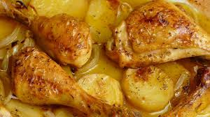
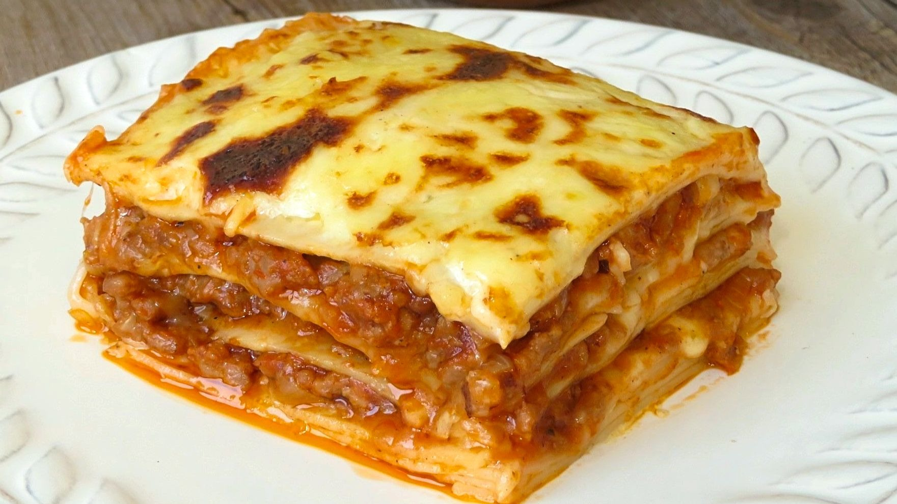
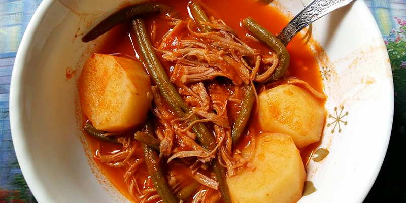

TANIA CARRILLO!
6TO SECRETARIADO BILINGUE
COMIDAS DELICIOSAS

1 pollo entero
4 patatas
2 cebollas
3 dientes de ajo
5 granos de pimienta negra
Unas ramas de perejil
Sal
Medio limón
1 vasito de vino blanco
Aceite de oliva virgen extra.
no de los acompañamientos preferidos de este plato es sin duda las patatas asadas, que os explicamos en nuestra receta. Pero también personalmente nos gusta mucho acompañarlo de ensaladas o de verduras al horno.

Para la corteza
12 láminas de lasaña (200 g).
1 barra de mantequilla (100 g).
1 paquete de queso parmesano rallado (70 g).
Para el relleno
Carne picada, te recomendamos una mezcla de cerdo y ternera, (300 g).
1 lata de tomates, enteros, pelados (250 g).
1/2 copa de vino blanco (50 mL).
Aceite de oliva (al gusto).
Sal y pimienta (al gusto).
1 zanahoria (30 g).
1 cebolla (60 g).
Para la bechamel
1/2 litro de leche.
Sal y pimienta (al gusto).
1/2 taza de harina (50 g).
1/2 barra de mantequilla (50 g).
 Seis tortillas de trigo o de maíz
Trescientos cincuenta kilogramos de carne picada, puede ser de ternera o de pollo
Cuatro dientes de ajo
Quinientos gramos de tomates
Sal al gusto del cliente.
Pimienta al gusto del cliente
aceite
Queso rayado al gusto del cliente.
Una cebolleta pequeña picada
Un jalapeño, también se puede usar un pimiento verde o “chile”
Dos tomates medianos
Unas hojas de cilantro
Media lima o medio limón
Seis tortillas de trigo o de maíz
Trescientos cincuenta kilogramos de carne picada, puede ser de ternera o de pollo
Cuatro dientes de ajo
Quinientos gramos de tomates
Sal al gusto del cliente.
Pimienta al gusto del cliente
aceite
Queso rayado al gusto del cliente.
Una cebolleta pequeña picada
Un jalapeño, también se puede usar un pimiento verde o “chile”
Dos tomates medianos
Unas hojas de cilantro
Media lima o medio limón

1 libra de carne para hilachas
tomate
cebolla
chile pimiento
chile pasa
chile guaque
1
Poner la carne por 15 min en oya de precion.
2
En otra oya poner a cocer el tomate y lo demas....ya cocido licuarlo con un pan de fraces para que espece...desilachar la carne y poner a sofreir con papas en rueditas,agregarle el recado y dejarlo a fuego lento por 15 a 20 min cuando la papa este cocida las hilachas estan listas para comer!!...